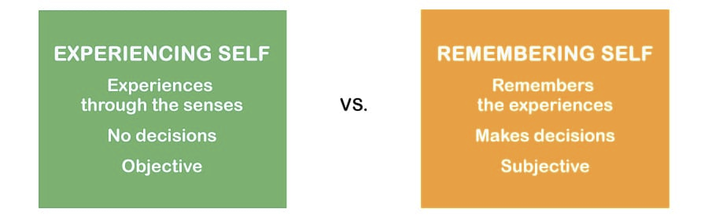
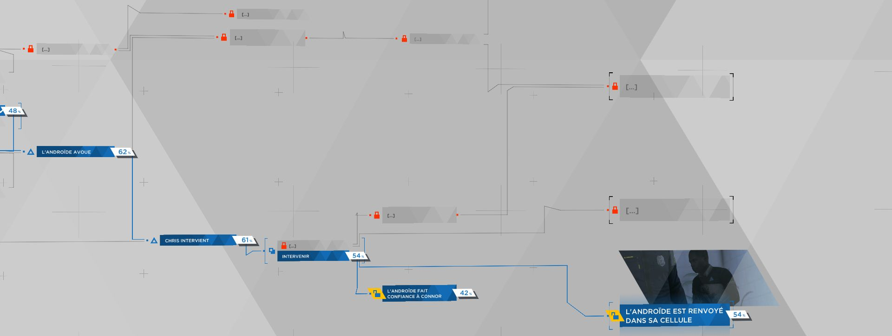

La Mémoire dans la narration interactive
Bienvenue dans cet article autour de la narration interactive. Il te suffit de cliquer sur les mots tel que pour lire la suite de l’article.
introduction
La narration est l'action d'exposer un récit. On appelle narrateur l’entité responsable de cette narration. Le narrateur immerge le lecteur dans l'histoire en y racontant des faits, des paroles et des descriptions dans un certain ordre. C’est de cette manière linéaire que se déroule traditionnellement la plupart des récits. Le rôle du lecteur / spectateur y est passif : il lui suffit de lire ou d'écouter et comprendre pour suivre l’histoire. À la différence de la narration dite “classique”, la narration interactive ou non-linéaire s’inscrit dans une volonté de donner le choix au lecteur, de rendre le lecteur acteur de la narration. Ces interactions permettent une alternative au récit classique en rajoutant un différent degré de lecture. Un choix imposé au spectateur peut représenter un vrai dilemme et amène la personne dans une zone inconfortable de stress ou de danger. Avec cela, il y a un réel plongeon dans l’histoire, la personne ressent les dangers, et voit les conséquences de ses actes. Ces choix peuvent survenir à plusieurs occasions, par exemple lorsque le récit offre de multiples interprétations ou lorsque les protagonistes de l’histoire sont amenés à prendre des décisions impactant le futur possible du récit. L’interaction peut ici s'interpréter au sens large “d'échange d'informations entre deux parties au travers d’un médium" peu importe l’information et le médium. En l’occurrence, il s’agit ici d’influer sur le cours du récit, faire des choix pour orienter le cours des éléments narratifs qui vont suivre. Cette interaction peut prendre de multiples formes, que ce soit par le parcours des pages dans un , via le visionnage d’un ou encore le gameplay dans les . Cependant, peu importe qu’elle soit classique ou non, la narration implique toujours de se rappeler des événements passés d’une histoire pour représenter la globalité du récit. La mémoire du lecteur permet de lier les événements les uns aux autres, de créer une cohérence dans le récit. Il est légitime de se demander comment la mémoire impacte l’expérience du spectateur et en quoi elle joue un rôle clé dans un récit interactif.
Dans le cas de la lecture avec narration interactive, le passage d’un choix à sa conséquence se fait manuellement par le lecteur. L’explication est très simple et contrairement aux autres médiums, ne nécessite pas d’apprendre quoi que ce soit. A chaque choix, plusieurs chemins s’offrent à nous, littéralement : “Si vous choisissez de fuir, allez en page 34. Si vous choisissez de rester, allez page 51.”. Ainsi, il est assez simple pour le lecteur de voir chaque possibilité de l’histoire en lisant toutes les pages du livre. On appelle souvent ce type de livre ou de BD : “le livre dont vous êtes le héros".

Nous allons maintenant voir comment la mémoire est impliquée dans la .
Dans ce cas (plus rare) des séries et films à narration interactive, le choix se fait par le biais d’une télécommande, d’un clavier ou par toucher sur écran tactile. Pour cela, il y a généralement une phase d’apprentissage des commandes en début d’expérience. Grâce à celle-ci, le spectateur est censé avoir toutes les cartes en main pour regarder le film / série, et faire des choix. Choix mémorisés ensuite par le médium pour la suite de l’histoire. Ici, contrairement aux livres et aux jeux vidéo, le temps est compté. En effet, le film ne fait (généralement) pas d’arrêt sur image pour laisser le temps de faire un choix. Sous nos yeux, tandis que plusieurs possibilités s’ouvrent à nous, les personnages sont toujours là, à hésiter aussi, attendant une réponse. Si le spectateur met trop de temps à répondre, alors un choix par “défaut” sera pris en compte, pour ne pas briser la dynamique du film.

Nous allons maintenant voir comment la mémoire est impliquée dans la .
C’est dans le jeu vidéo qu’il y a la plus grande diversité de manières de choisir. Cela est caché ou non dans le gameplay. Le gameplay correspond à la façon dont le jeu se joue. Une grande différence avec les autres médiums présentés, c’est que parfois le joueur ne se rend même pas compte d’un choix qui vient d’être fait. La mémorisation est bien moins visible qu’ailleurs, c’est en découvrant la suite de l’histoire que le spectateur s’en rend compte. De plus, les actions ont toujours des conséquences mais pas forcément sur le scénario en lui-même. Par exemple, dans un jeu où l'honneur du “héros” est important, commettre un meurtre va faire baisser son estime dans le regard des autres personnage. Le jeu Fable illustre parfaitement ce principe. Les choix du joueur ont des conséquences sur l’aspect du personnage et sur l’histoire car la réputation du joueur le précède toujours. La liberté d’action est particulièrement grande et le joueur peut se tourner vers les forces obscures ou le bien en faisant des actions comme se marier, divorcer, massacrer des innocents, des gardes ou des bandits. Dans le jeu Dishonored, l’essence même du gameplay est d’accorder au joueur la possibilité d’envisager le jeu sous l’angle de son choix. Furtivité totale sans aucune action létale, infiltration discrète mais meurtrière ou une approche plus brutale de la situation en déclenchant une fusillade, c’est à travers ces différents styles de jeu que le joueur peut utiliser sa mémoire de l’environnement. La patience et l’exploration sont des vertus qu’il faut mettre à profit! Étudier l'environnement du jeu, mémoriser les patrouilles de gardes, les ouvertures, les objets à porter pour créer des diversions va permettre par exemple de pouvoir realiser le niveau sans commettre de meurtre. Ces différentes manières de faire n'entraînent généralement pas une modification du scénario, mais changent drastiquement l’expérience de jeu.
Nous allons maintenant voir comment la mémoire est impliquée dans la .
Bien que des éléments narratifs peuvent toujours être mêlés à l'expérience du spectateur comme dans le cadre d’un jeu vidéo où certains éléments de l’histoire dévoilent des possibilités futures pour le joueur, c’est réellement dans le cadre d’une histoire interactive que les choix du spectateur vont faire sens. Ici, deux types de mémoires sont en jeu : et la mémoire de l’histoire.
La mémoire du spectateur correspond à toutes ses connaissances de l'histoire, ses souvenirs, mais aussi à sa manière de penser et de percevoir le monde. Tout le palais mental du spectateur influence sa perception de l’expérience et les possibilités futures du récit.
C’est en effet en fonction de nos expériences passées que l’on prend des décisions dans notre vie. Dans l’histoire interactive, la mémoire du spectateur n’est donc pas seulement une représentation du récit dans sa généralité mais une mémoire globale de toutes les expériences passées qui va influencer toutes les décisions à prendre. Mais ce n’est la seule mémoire en jeu, il y a aussi .
Contrairement à la narration linéaire, l’histoire possède ici également une mémoire. Elle se souvient de chaque action du spectateur. Cette mémoire se matérialise par une arborescence plus ou moins complexe où chaque embranchement représente un choix. Chaque branche est un récit différent des autres. La fin de cette branche correspond à une fin alternative que l'histoire propose. C’est parfois au travers d’un ensemble d’actions qu’un récit alternatif se constitue. Plusieurs éléments et sous embranchements peuvent constituer ensemble une fin alternative. Cette mémoire ne fonctionne pas comme celle du spectateur, elle va se construire grâce à celle-ci et va permettre d’orienter la narration en fonction des actions du spectateur. C’est à travers l’implication de la mémoire du spectateur que s’articule la création d’histoires interactives. C’est donc grâce à ces deux mémoires que l’expérience existe et nous allons en voir un .
Dans le premier chapitre du jeu Detroit Become Human, le joueur incarne un détective nommé Connor qui va essayer de sauver une fillette prise en otage. Cette prise d’otage se scinde en deux parties: une recherche d’indices et une négociation avec le criminel. Dans la première phase, il s’agit d’explorer l’environnement pour récolter assez d’informations sur la situation et le contexte du crime. C’est dans cette première phase qu’une partie de la mémoire du spectateur entre en jeu. Le joueur tente de comprendre le crime et ses causes en mémorisant chaque détail, créant une sorte de palais mental du crime. Ainsi la personne va pouvoir se représenter un ensemble de possibilités du crime en fonction des indices qu’elle va trouver. C’est dans la deuxième phase du jeu, la négociation, que le joueur va devoir se remémorer les événements passés et les indices trouvés pour prendre des décisions. C’est ici que les deux mémoires se rencontrent. Le joueur fait un choix en fonction de ce qu’il a trouvé et de sa manière de voir le monde. Ce choix est enregistré dans la mémoire du jeu. Cela fait alors passer l’histoire dans un des embranchements, puis un autre et un autre... Ce qui va petit à petit mener le joueur à une fin très personnelle qui coïncide avec les actions effectuées.

Ici, donc, un ensemble d’actions des deux mémoires va permettre de créer une divergence narrative. C’est au travers de ces éléments que va être impactée.
Intéressons-nous maintenant à l’expérience du spectateur. Comme dit auparavant, ce sont nos souvenirs qui forgent notre force de décision. Après avoir vécu une histoire interactive, la mémoire rentre encore en jeu. Cela peut avoir de nombreux points positifs mais également certains inconvenants.
Les émotions ressenties avec une narration interactive peuvent être bien plus vives par rapport à une histoire linéaire étant donné l’investissement bien plus puissant. Déjà, le scénario peut prendre beaucoup plus de libertés et nous emmener là où on ne l’attend pas. Une histoire d’aventure et de découvertes est bien plus prenante lorsque le spectateur fait les choix que quand on suit passivement l’histoire. Des dilemmes moraux peuvent être proposés, laissant au spectateur seul le choix. Cela marque clairement l’expérience. Aussi un spectateur qui parcourt l’histoire une fois n’en verra pas la totalité de son contenu. Si jamais l’histoire l’a passionné, cela peut lui donner envie de refaire plusieurs fois l’expérience afin d’en voir toutes les possibilités, toutes les fins différentes. Dans l’exemple précédemment cité, Detroit Become Human, il faudra rejouer de nombreuses fois pour explorer chaque chemin de l’histoire.
Il y a aussi des côtés moins positifs avec ce genre de narration. L’histoire doit réellement toucher le spectateur sinon son investissement peut devenir une contrainte, le choix ne devient alors qu’une formalité pesante à passer sans qu’elle ait un réel intérêt. De plus, celui-ci doit savoir comment effectuer ledit choix avant d'être lancé dans le récit, sinon cela peut interrompre l'expérience du spectateur et peut s'avérer stressant. D’ailleurs, dans le cas de la lecture, le choix manuel à faire peut sortir le lecteur de l’histoire. On lui rappelle explicitement qu’il est en train de lire un livre (“allez en page 6“) et qu’il choisit sa voie lui-même, voie qui peut donc être facilement interchangeable. Aussi, le sens final d’une œuvre peut être moins frappant et significatif que pour une narration linéaire. Cela implique de prévoir plusieurs axes narratifs qui peuvent ne pas être tous aussi intéressants et dans lesquels les techniques classiques de la narration ne peuvent pas fonctionner. Tous ces points marquent chacun d’entre nous différemment en fonction de l’expérience que l’on a vécue.
Ces différentes émotions marquent notre mémoire et cela peut avoir plusieurs conséquences. Cela va façonner notre manière de percevoir le jeu/film/livre plus tard, dans nos souvenirs. De manière positive si l’on a été surpris par l’histoire et les embranchements alternatifs proposés, négative si l’on a pas réussi à s'y immerger par exemple. Ensuite, cela va préparer aux futures expériences, comme dit lors de la deuxième partie, et influencer de futurs choix. Nos émotions de l’expérience forgent nos souvenirs et nos expériences .
Comme nous venons de le voir, la mémoire joue un rôle décisif dans la narration interactive. C’est au travers des différents choix proposés au spectateur que la narration se construit. Le spectateur met sa mémoire à profit pour prendre les futures décisions et être acteur de sa propre narration. La découverte du récit est d’autant plus intéressante car le spectateur est impliqué dans les décisions et ne suit pas passivement le récit. Cette expérience impacte le ressenti et les souvenirs du spectateur durablement pour faire face aux prochaines.
Sources références
- Hoguet, https://medium.com/nouvelles-narrations/quest-ce-que-la-narration-interactive-3fbdb9bc7a04
- Bill Widmer, https://zoovu.com/blog/memories-of-experience-influence-decision-making/
- Peter Noel Murray, https://www.psychologytoday.com/us/blog/inside-the-consumer-mind/201210/how-memories-experience-influence-behavior
- Joshua Gad, https://medium.com/nyc-design/branching-narratives-black-mirror-bandersnatch-ed1b5dfde941
- Annie Loreau-Robert, http://duess2002.free.fr/annie/MOD8/MEM_Narration.htm
- Ian Schreiber, traduit par Xavier Lardy, http://www.xavierlardy.fr/2016/05/niveau-10-la-narration-non-lineaire/
- Martin Vidberg, http://vidberg.blog.lemonde.fr/
- Mariel Bluteau, https://www.franceinter.fr/culture/jeux-video-detroit-become-human-david-cage
- Shaelle, https://jeu.video/action-aventure/heavy-rain/jeu-a-revolutionne-fiction-interactive
- Olivier Bénis, https://www.franceinter.fr/culture/late-shift-un-soupcon-de-jeu-dans-la-seance-cine
- Dream, Detroit Become Human, Sony Interactive Entertainment, 2018
- Lionhead Studios, Fable, Microsoft Game Studios, 2004
- Arkane Studio, Dishonored, Bethesda Softworks, 2012
- CtrlMovie, Late Shift, Wales Interactive, 2017